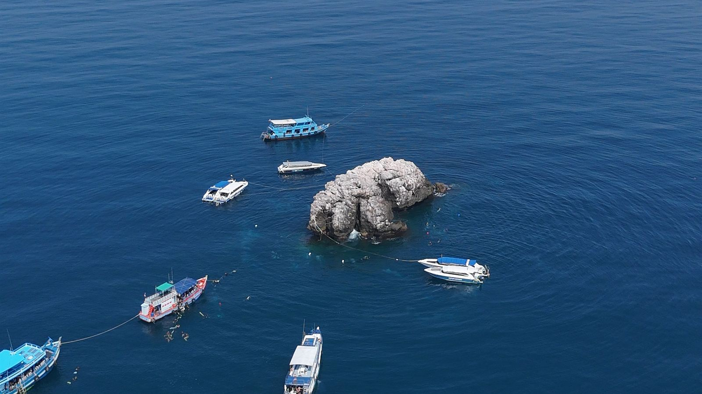
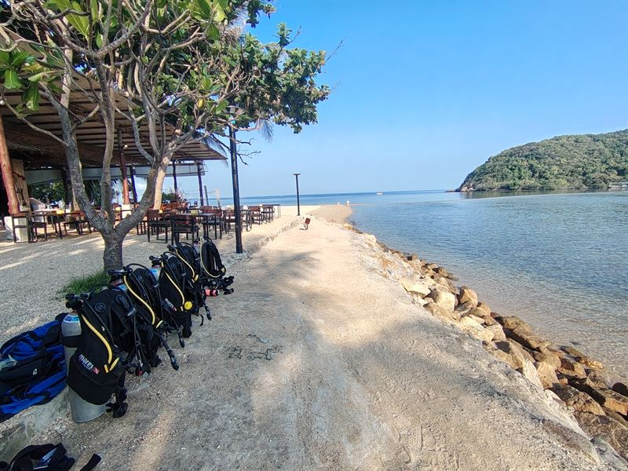

Koh Tao
Das Einkaufszentrum
- Rund 80 Tauchbasen auf einer kleinen Insel
- Mehr Tauchplätze nah an der Küste
- Meist die günstigsten Kurse
- Jung, gesellig und voller Energie
- Sail Rock etwa 30 Minuten weiter entfernt, und nicht jeden Tag

Start / Koh Phangan oder Koh Tao
Zwei Inseln, eine Stunde voneinander entfernt, die sich den besten Tauchplatz im Golf teilen. Wir betreiben Tauchbasen auf beiden, also hier unsere ehrliche Einschätzung, was anders ist — und welche zu dir passt.
Die kurze Antwort
Koh Tao ist eines der belebtesten Tauchziele der Welt. Koh Phangan ist ruhiger, mit weniger Tauchbasen und einer persönlicheren Atmosphäre. Das Tauchen selbst teilen sie sich: Beide Inseln tauchen an Sail Rock.
Koh Tao
Koh Phangan

Sail Rock · von beiden Inseln aus betaucht
Sail Rock
Sail Rock liegt im offenen Meer zwischen den beiden Inseln, und es ist genauso voll, egal von welcher Insel die Boote kommen. Der Unterschied ist, wie und wann du hinkommst.

Koh Ma · zehn Minuten von Chaloklum
Tauchplätze und Preise
Koh Tao hat mehr Tauchplätze rund um die Insel. Koh Phangan hat Sail Rock, dazu Koh Ma, Little Sail Rock und die Oil Platform — weniger Plätze, aber viel weniger Taucher darauf.
Kurse auf Koh Tao sind meist günstiger. Der Vergleich, den wir immer ziehen: Koh Tao ist wie ein Einkaufszentrum, in dem alles ein bisschen weniger kostet, aber unpersönlicher ist. Wir sind eher wie der Laden in deiner Nachbarschaft, wo man deinen Namen kennt und weiß, wie du tauchst.
Die Atmosphäre
Koh Tao ist klein und alles ist konzentriert: Tauchbasen, Bars und Menschen, alles nah beieinander. Das passt zu einem jüngeren Publikum. Koh Phangan ist größer und familienfreundlicher. Wenn du in den Süden der Insel gehst, gibt es sogar mehr Partys als auf Koh Tao — aber in Chaloklum im Norden merkst du davon nichts.

Eine kleine Gruppe, ein Instructor
Tauchen lernen
Es sind unterschiedliche Lernerfahrungen. Viele gehen nach Koh Tao, um den Kurs mit vielen anderen zu teilen, Leute kennenzulernen, eine tolle Zeit zu haben und mit der Zeit Erfahrung mit mehr Tauchgängen zu sammeln.
Wer nach Koh Phangan kommt, konzentriert sich meist mehr auf das Tauchen selbst, und das Erlebnis ist persönlicher: maximal vier Schüler pro Instructor und Zeit für jede Frage.
Welche passt zu dir?
Wähle Koh Tao, wenn
Wähle Koh Phangan, wenn
Lieber Koh Tao? Unsere Schwesterbasis, The Diver's Boat Koh Tao, ist seit 2015 dort.
Fragen
Den besten Tauchplatz der Gegend, Sail Rock, teilen sich beide Inseln. Koh Tao hat mehr Plätze nah an der Küste und viel mehr Tauchbasen; Koh Phangan ist ruhiger, mit kleineren Gruppen und einer persönlicheren Atmosphäre. Keine ist besser — sie passen zu unterschiedlichen Menschen.
Meist ja. Bei rund 80 konkurrierenden Tauchbasen gehören die Preise auf Koh Tao zu den niedrigsten, die du findest. Auf Koh Phangan zahlst du etwas mehr für kleinere Gruppen und mehr persönliche Betreuung.
Rund 80 auf Koh Tao und rund 15 auf Koh Phangan, das eine viel größere Insel ist.
Von Chaloklum an der Nordküste von Koh Phangan dauert es etwa eine Stunde. Von Koh Tao dauert es etwa eine halbe Stunde länger, und nicht jede Basis fährt jeden Tag hin.
Nein. Die großen Partys sind im Süden der Insel. Der Norden, wo Chaloklum liegt, ist ruhig und familienfreundlich, und von den Partys merkst du dort gar nichts.
Ja. Es ist genauso voll, egal von welcher Insel die Boote kommen. Wir legen in Chaloklum etwa eine Stunde und eine Viertelstunde nach den anderen Booten ab, deshalb haben wir den zweiten Tauchgang meist für uns allein.
Sag uns, wie du gern reist und was du dir vom Tauchen wünschst, und wir geben dir eine ehrliche Antwort — auch wenn sie lautet: „Fahr nach Koh Tao.“